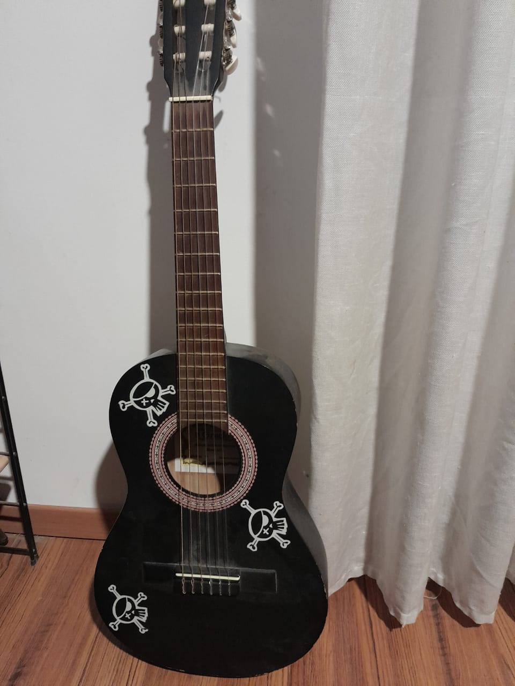
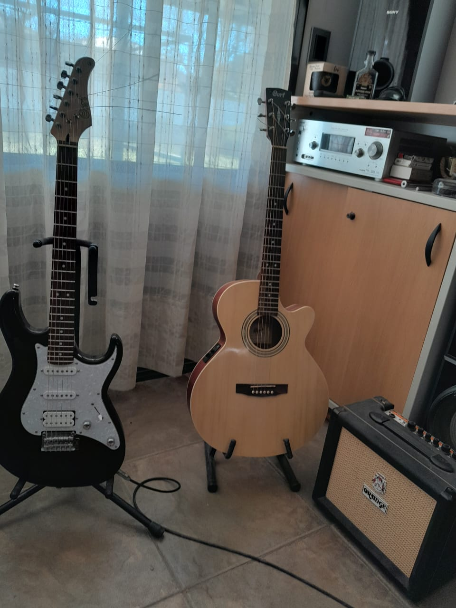

MUSICA
Mi Primer Acercamiento
La Primera vez que estuve relacionado con la musica fue cuando tenia 8 años, mi abuela me regalo mi primera guitarra clasica. Al principio no la use mucho cuando creci un poco intente clases de guitarra en un instituto pero no me convencio demasiado entonces lo deje.

A pesar de no haber ido a clases de guitarra igualmente segui practicando de forma autodidacta en mi casa, con el tiempo fui mejorando y decidi dar un salto y comprarme una guitarra acustica cort sfx-me con la cual pude mejorar mucho mi nivel convirtiendome en un guitarrista mucho mas completo, con el tiempo tambien consegui una guitarra electrica cort con la cual pude explorar otros generos de la musica.

Mis Inspiraciones
en todo este camino e tenido varios guitarristas que me han influenciado pero creo que los mas relevantes son:
todos estos son excelentes guitarristas que me han ayudado a mejorar mis tecnicas y me han inspirado a algun dia convertirme en ellos.
Musica Que Escucho
Soy una persona que es muy flexible con la musica, escucho un poco de todo, aca te dejo una lista con los generos que escucho y algunos de mis referentes favoritos de cada genero
- Rock:
- Pink Floyd
- Scorpions
- Guns N Roses
- Metal:
- Rage Against The Machines
- Pantera
- Limp Bizkit
- Rock Nacional:
- Andres Calamaro
- Divididos
- No Te Va a Gustar
- Pop:
- Bruno Mars
- Sam Smith
- Keane
- Trap:
- Reggaeton:
Tocando
Para cerrar esta seccion te dejo un video mio tocando la guitarra :)